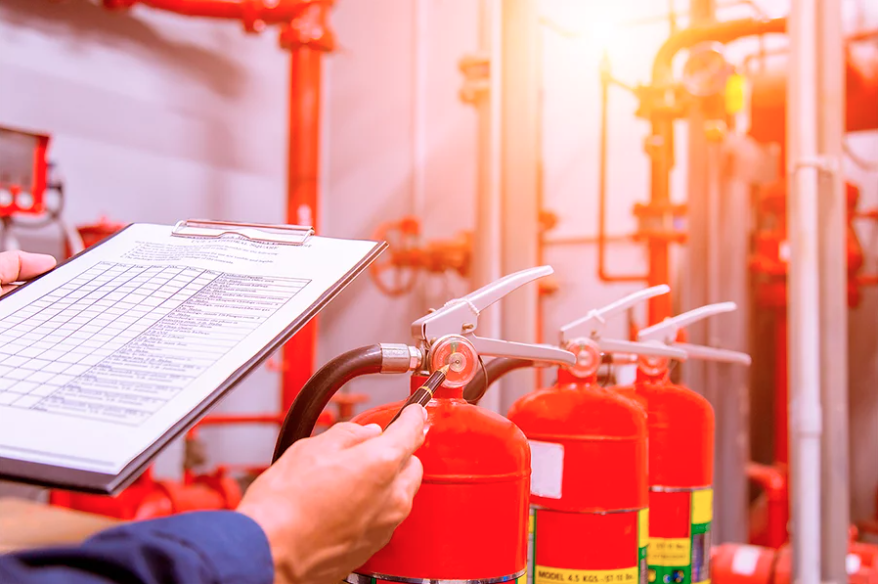

<main>
    <section class="topo-do-site">
        <div class="interface">
            <div id="tela" class="fex">
                <div class="tipo-site">
                    <h1>CERTIFICAÇÃO PARA COMBATE A INCÊNDIO</h1>
                    <p>Podemos tornar seus espaços mais seguros e eficientes com nossos serviços especializados em prevenção de incêndios. Nosso foco está na elaboração de projetos técnicos abrangentes para garantir a conformidade com as regulamentações de segurança contra incêndios. Nossa equipe experiente trabalha para atualizar e renovar seu AVCB (Auto de Vistoria do Corpo de Bombeiros), proporcionando tranquilidade aos nossos clientes.</p>
                </div>
                <div class="img-topo-site">
                    
                </div>
            </div>
        </div>
    </section>
</main>